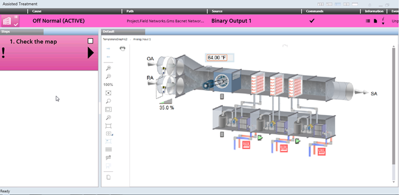

Executing a Graphic Step in Assisted Treatment
- You are in the Assisted Treatment window and the operating procedure includes a graphic step that you want to do. For background information about the Desigo CC graphics feature, see the reference section.

- From the Steps list, select the [graphic step].
- A graphic of the facility displays in the Default tab.